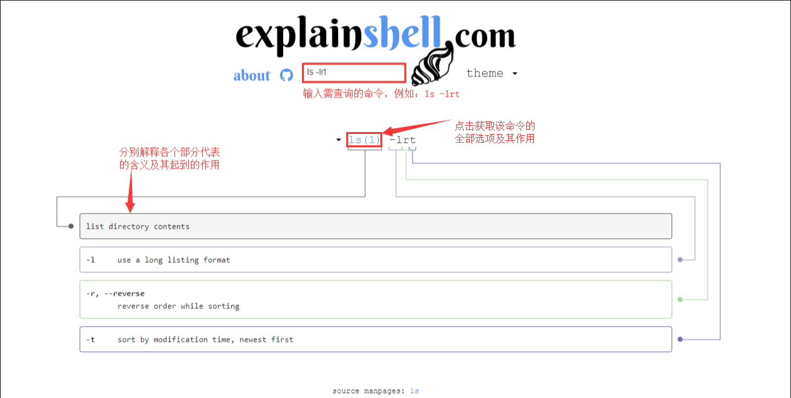

常见命令
ls命令
ls命令就是list的缩写，默认ls用来打印出当前目录的清单，如果ls指定其他目录，那么就会显示指定目录里的文件及文件夹清单。通过ls命令不仅可以查看linux文件夹包含的文件，而且可以查看文件权限(包括目录、文件夹、文件权限)，查看目录信息等等
- 命令格式：
ls [选项] [目录名] - 命令功能：
列出目标目录中所有的子目录和文件 - 常用参数：
- -a 显示当前目录下的所有文件，包括以.开头的隐藏文件
- -l 显示当前目录下的文件的权限、所有者、文件大小等信息详细
- -al 显示当前目录下的所有文件的详细信息
pwd命令
- 命令格式：
pwd [选项] - 命令功能：
查看当前工作目录的完整路径 - 常用参数：
- 一般情况下不带任何参数
- -P 如果目录是链接时, 显示出实际路径，而非使用连接路径
cat命令
cat命令的用途是连接文件或标准输入并打印。这个命令常用来显示文件内容，或者将几个文件连接起来显示，或者从标准输入读取内容并显示，它常与重定向符号配合使用
- 命令格式：
cat [选项] [文件] - 命令功能：
- 一次显示整个文件:cat filename
- 从键盘创建一个文件:cat > filename 只能创建新文件,不能编辑已有文件.
- 将几个文件合并为一个文件:cat file1 file2 > file（覆盖掉file3原文件内容，file1和file2文件内容不变）
mv命令
mv命令可以用来移动文件或者将文件改名
- 命令格式：
mv [选项] 源文件或目录 目标文件或目录 - 命令功能：
视mv命令中第二个参数类型的不同（是目标文件还是目标目录），mv命令将文件重命名或将其移至一个新的目录中。当第二个参数类型是文件时，mv命令完成文件重命名，此时，源文件只能有一个（也可以是源目录名），它将所给的源文件或目录重命名为给定的目标文件名。当第二个参数是已存在的目录名称时，源文件或目录参数可以有多个，mv命令将各参数指定的源文件均移至目标目录中。在跨文件系统移动文件时，mv先拷贝，再将原有文件删除，而链至该文件的链接也将丢失 - 命令参数：
- -b 若需覆盖文件，则覆盖前先行备份
- -f 若目标文件已存在，不询问,直接覆盖
- -i 若目标文件已存在，询问是否覆盖
- -t 即指定mv的目标目录，该选项适用于移动多个源文件到一个目录的情况，此时目标目录在前，源文件在后
cp命令
cp命令用来复制文件或者目录
- 命令格式：
cp [选项] 源路径 目标路径 - 命令功能：
将源文件复制至目标文件，或将多个源文件复制至目标目录 - 命令参数：
- -r 复制目录及目录内的所有项目
touch命令
touch命令用来修改文件时间戳，或者新建一个不存在的文件
- 命令格式：
touch [选项] 文件 - 命令功能：
- touch命令参数可更改文档或目录的日期时间，包括存取时间和更改时间
- touch file 创建一个新的文件名字是file，无法给文件赋予初始内容
- touch file 如果file已经存在，责修改file的时间标签改为当前系统时间
rm命令
rm命令用来删除一个目录中的一个或多个文件或目录，它也可以将某个目录及其下的所有文件及子目录均删除。对于链接文件，只是删除了链接，原有文件均保持不变
- 命令格式：
rm [选项] 文件 - 命令功能：
删除一个目录中的一个或多个文件或目录，如果没有使用 -r 选项，则 rm 不会删除目录。如果使用 rm 来删除文件，通常仍可以将该文件恢复原状。 - 命令参数：
- -f 忽略不存在的文件，从不给出提示
- -r 将参数中列出的全部目录和子目录均递归地删除
命令行快捷键
- ↑↓ 上一命令 / 下一命令
- !! 上一命令占位符
- Tab 自动补全路径
- Alt+. 上一命令的最后一个参数
- && 前面的执行成功了，再执行后面的
- || 前面的执行失败了，就执行后面的
- ; 前面执行完了，不管成功失败，就执行后面的
- > 重定向
- | 管道
使用explainshell.com
